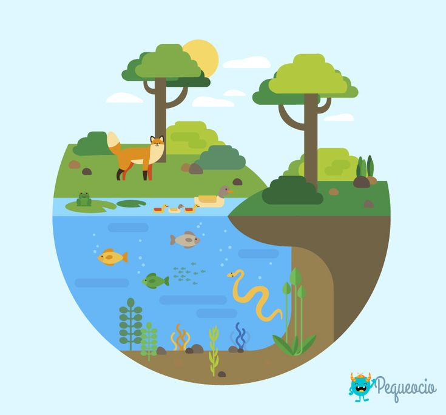
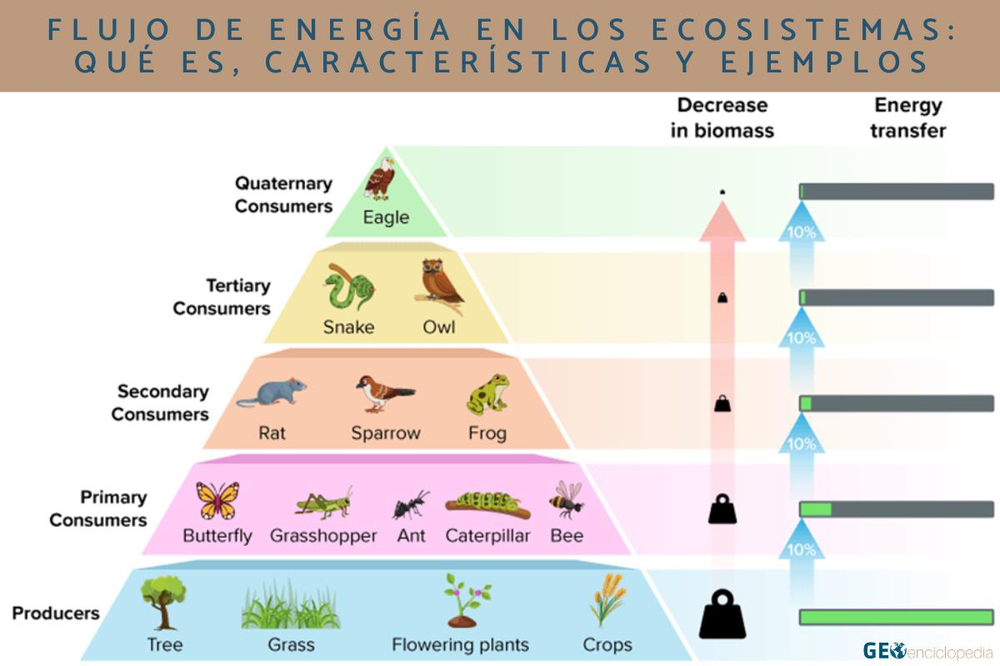
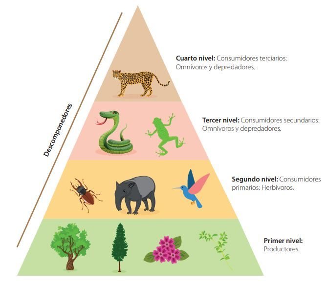

Entradas del Blog

La Tierra como Ecosistema: El sistema que hace posible la vida
Aprende sobre los componentes bióticos y abióticos, las cuatro esferas de la Tierra y las condiciones que hacen posible la vida.

Flujo de Energía y Ciclos Biogeoquímicos
Descubre cómo la energía fluye a través de los ecosistemas y los ciclos que mantienen la vida en el planeta.

El Rol de los Seres Vivos en los Ecosistemas
Conoce la función de productores, consumidores y descomponedores en los ecosistemas.

El Equilibrio Ecológico y el Impacto Humano
Aprende sobre el equilibrio de los ecosistemas y cómo las actividades humanas lo afectan.

Construyendo un Futuro Sostenible
Descubre la importancia de cuidar los ecosistemas y las acciones para construir un futuro sostenible.